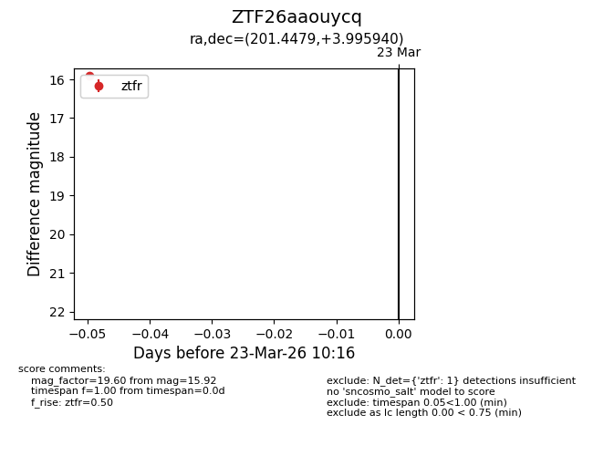
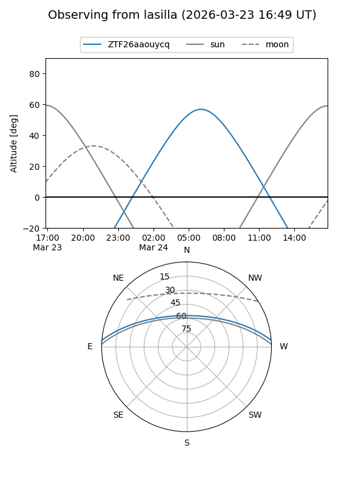
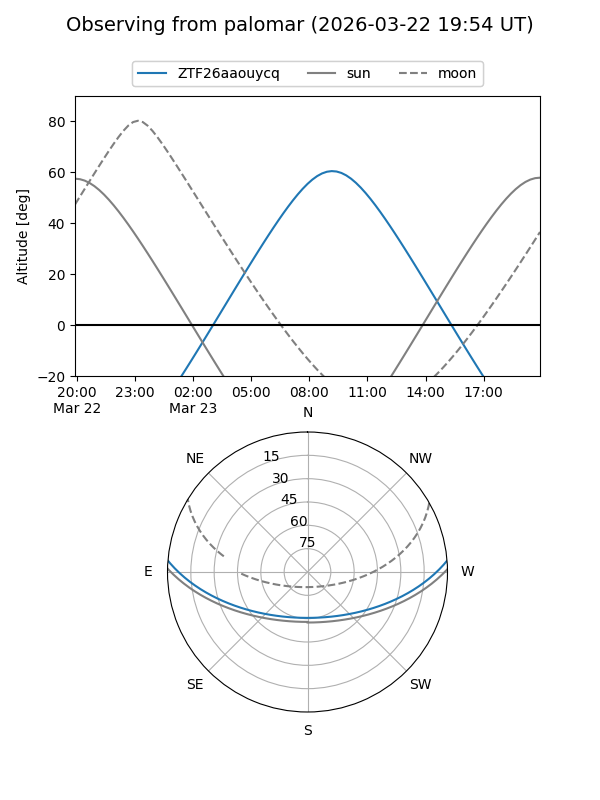

ZTF26aaouycq
Target ZTF26aaouycq at 2026-03-23 10:18
Aliases and brokers:
FINK: link
Lasair: link
ALeRCE: link
alt names
ZTF26aaouycq (ztf,fink_ztf)
Coordinates:
equatorial (ra, dec) = 201.4479,+3.99594
equatorial (HMS+DMS) = 13:25:47.50,+03:59:45.38
galactic (l, b) = (323.9484,+65.45627)
Flags:
Photometry:
last ztfr=15.92
1 ztfr detections
Lightcurve

Visibility


Additional plots